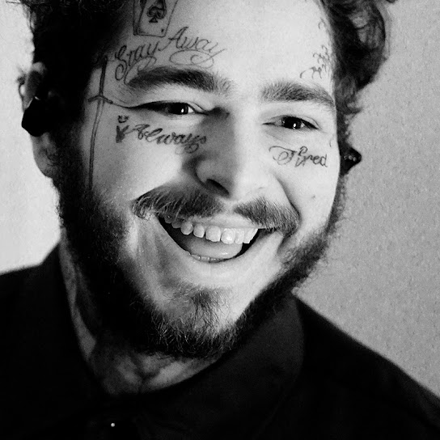

Austin Richard Post (born July 4, 1995), known professionally as Post Malone, is an American rapper, singer, and songwriter. Known for his variegated vocals, Malone has gained acclaim for blending genres and subgenres of hip hop, pop, R&B, and trap. His stage name was derived from inputting his birth name into a rap name generator.
Austin Richard Post was born on July 4, 1995, in Syracuse, New York. He was raised by his father, Richard Post, and his stepmother, Jodie. His father had been a DJ in his youth and introduced Malone to many different genres of music including hip hop, country, and rock. When Malone was nine years old, he and his family moved to Grapevine, Texas after his father became the manager of concessions for the Dallas Cowboys. Malone began to play the guitar and auditioned for the American band Crown the Empire in 2010, but was rejected after his guitar strings broke during the audition. He credited his initial interest in learning guitar to the video game Guitar Hero.